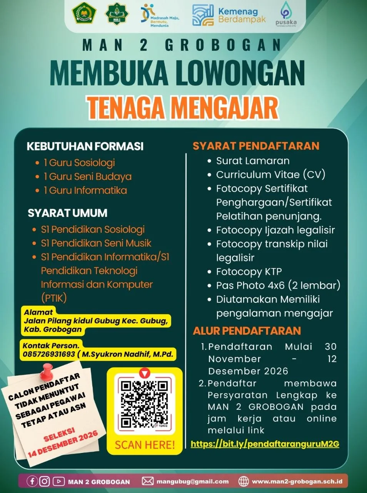
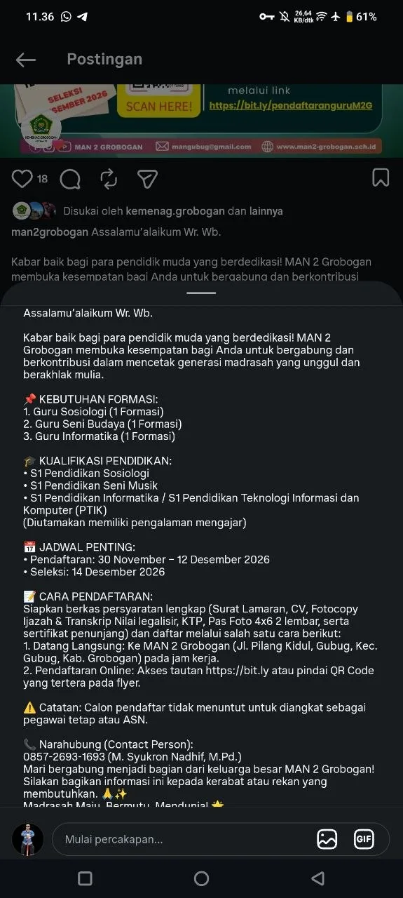

LOWONGAN GURU MAN 2 GROBOGAN TAHUN 2026
Lowongan Guru MAN 2 Grobogan Tahun 2026
Assalamu'alaikum Wr. Wb.
Kabar baik bagi para pendidik muda yang berdedikasi! MAN 2 Grobogan membuka kesempatan bagi Anda untuk bergabung dan berkontribusi dalam mencetak generasi madrasah yang unggul dan berakhlak mulia.


Formasi yang Dibutuhkan
- Guru Sosiologi (1 Formasi)
- Guru Seni Budaya (1 Formasi)
- Guru Informatika (1 Formasi)
Kualifikasi Pendidikan
- S1 Pendidikan Sosiologi
- S1 Pendidikan Seni Musik
- S1 Pendidikan Informatika / S1 Pendidikan Teknologi Informasi dan Komputer (PTIK)
Diutamakan memiliki pengalaman mengajar.
Jadwal Penting
- Pendaftaran: 30 November – 12 Desember 2026
- Seleksi: 14 Desember 2026
Cara Pendaftaran
Siapkan berkas persyaratan lengkap (Surat Lamaran, CV, Fotocopy Ijazah & Transkrip Nilai legalisir, KTP, Pas Foto 4x6 2 lembar, serta sertifikat penunjang), lalu daftar melalui salah satu cara berikut:
- Datang Langsung: Ke MAN 2 Grobogan (Jl. Pilang Kidul, Gubug, Kec. Gubug, Kab. Grobogan) pada jam kerja.
- Pendaftaran Online: Kunjungi tautan bit.ly/pendaftaranguruM2G atau pindai QR Code yang tertera pada flyer.
Catatan: Calon pendaftar tidak menuntut untuk diangkat sebagai pegawai tetap atau ASN.
Narahubung
M. Syukron Nadhif, M.Pd.
0857-2693-1693
Mari bergabung menjadi bagian dari keluarga besar MAN 2 Grobogan! Silakan bagikan informasi ini kepada kerabat atau rekan yang membutuhkan.
Cerdas, Santun, dan Berprestasi!